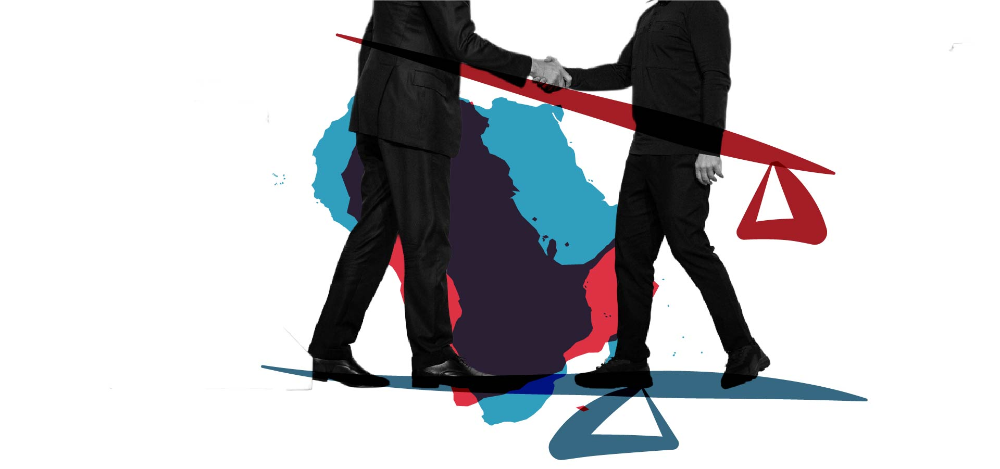
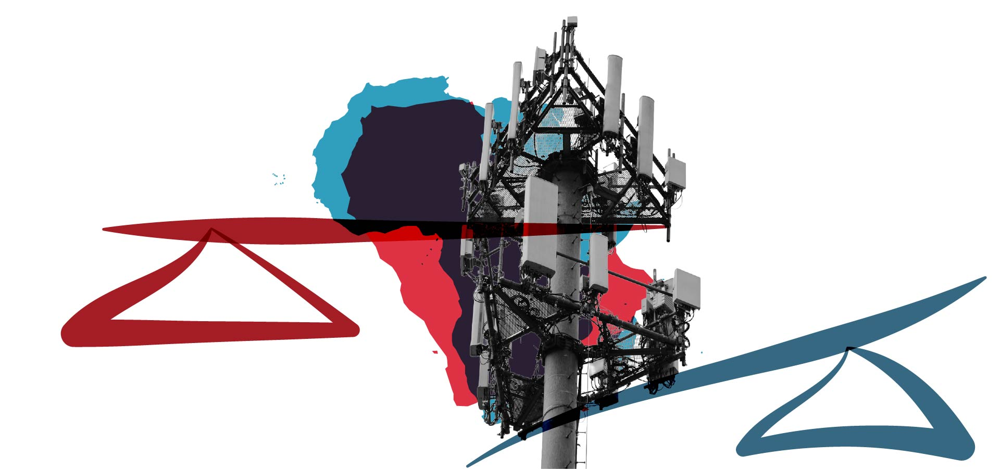
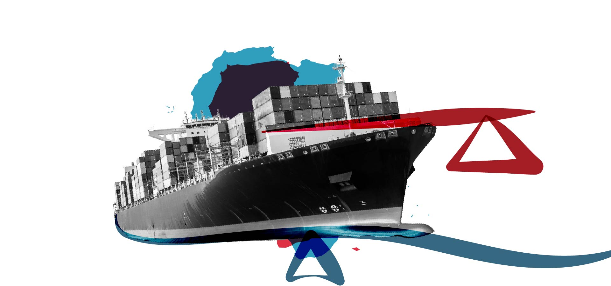
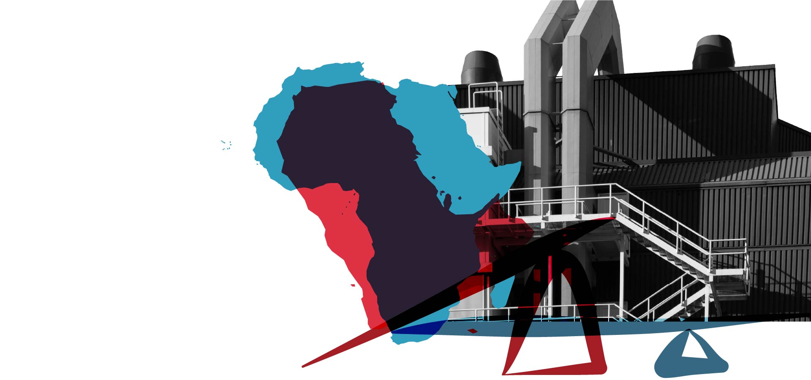
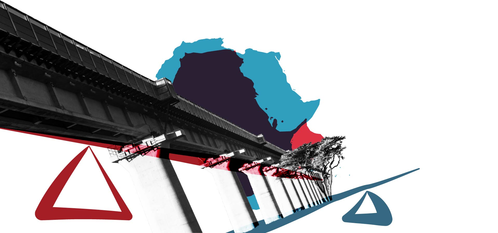
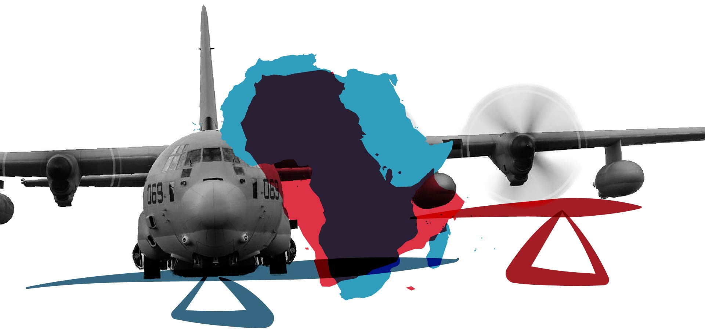

The EU has an unusually broad and deep-rooted presence in both Africa and the Middle East and the Gulf, although the scope and depth of its engagement differs markedly between the two regions. In Africa, it remains a major player despite the growing involvement of other actors. In the Middle East and the Gulf, it is one of several leading partners, alongside China in trade, the US in security and Türkiye in diplomacy. In an increasingly competitive geopolitical environment, the challenge for the EU is not so much to expand this presence as to leverage it more effectively.
Levers of Influence maps how the EU and selected external actors(1) engage through diplomacy, soft power, economic ties and military cooperation. It identifies where the EU remains strong, where its position is coming under pressure, and where interests converge.
The landscape of external partnerships across Africa, the Middle East and the Gulf is becoming more plural, but no new hierarchy of influence is emerging. No single actor leads across diplomacy, soft power, trade, finance, infrastructure and security, and strengths in one domain do not necessarily carry over to others.
The EU retains substantial weight across both regions, but that weight translates unevenly into political alignment, favourable perceptions or advantages in specific sectors. Its comparative advantage lies in the breadth of its relationships rather than dominance in every domain – and that breadth is collective. Taken together, EU institutions and Member States combine economic, diplomatic, cultural and security ties on a scale that none could sustain alone across both regions. In Africa, the EU remains the leading trading partner, the largest source of recorded foreign direct investment (FDI) and the largest provider of official finance among the actors tracked.
The EU retains exceptional reach, but increasingly other actors are expanding their involvement in specific sectors and regions. The EU’s strengths are uneven: in Africa, its trade lead is heavily anchored in North Africa, while China leads across sub-Saharan Africa. EU Member States contribute far fewer personnel to UN peacekeeping missions than India or China. In the Middle East and the Gulf, the EU remains the largest recorded source of FDI and a major commercial and development partner. Yet other actors lead in key areas: China dominates in commodities trade, Türkiye has the widest diplomatic footprint and the United States remains the main security partner. European net official development assistance (ODA) has also declined in both regions.
China combines extensive commercial and diplomatic strengths. It has embassies in, and formalised partnerships with, all 53 African states it recognises, is the largest trading partner of the Middle East and the Gulf, and supplies three-quarters of Africa’s green energy imports. Its position is nevertheless uneven across the different dimensions of engagement. Recorded Chinese FDI in Africa remains far below that of the EU, and although China is the continent’s largest official bilateral creditor, repayments exceeded new lending in 2022–24. In Africa, however, China is also expanding its security presence, not only through its long-established military base in Djibouti but also through military exercises with Egypt and countries in the Western Indian Ocean region.
The United States has a more security-centred profile, particularly in the Middle East and the Gulf, where it remains the main security partner, largest arms supplier and, in 2025, maintained the largest military deployment. Its economic role is more mixed: it was the second-largest aid provider to Africa among the actors examined in 2022–24 and remains a significant investor, but accounts for under 5% of Africa’s trade and is a relatively minor bilateral creditor, with most outstanding debt claims stemming from earlier lending.
The Gulf states have increasingly prominent but differentiated roles as investors, donors and security partners. Their recorded investment in Africa has risen by around 40%, driven largely by the United Arab Emirates (UAE), while Saudi Arabia is a major, predominantly grant-based donor. In Africa, Gulf countries complement their diplomatic outreach with a much wider network of development and humanitarian projects. Within the Gulf, regional governments are also taking a more active role in organising security cooperation with multiple external partners. Israel has a distinct profile: it is the region’s only net exporter of high-tech goods, and it has expanded its security ties in Africa, with recent arms transfers concentrated mainly in Morocco.
Türkiye, India, Japan and South Korea have distinct strengths. Türkiye combines the widest diplomatic network in the Middle East and the Gulf with extensive engagement in education, migration, development and security across both regions. India’s overall trade share in Africa is relatively modest, but it plays an outsized role in cereal and selected pharmaceutical supplies and deploys more UN peacekeepers there than any other actor examined. Japan stands out for continued lending and a near-doubling of its aid in the Middle East. South Korea has a smaller financial footprint but a highly concessional lending portfolio, while its arms transfers to the Gulf (mainly to the UAE) rose sharply between 2018–21 and 2022–25.
Russia and Iran have a more limited presence, concentrated in specific areas. Russia’s recorded arms transfers to Africa fell by more than four-fifths between the two comparison periods, while its military presence is concentrated in a small number of countries, increasingly through its Africa Corps. Its economic footprint is also limited, although it occupies important niches: despite accounting for less than 1% of Africa’s trade, Russia supplies around 12% of the continent’s cereal imports. At the same time, Russia has maintained and expanded its diplomacy and soft power outreach, notably through the Russia–Africa summits, Russian Houses and development projects. Iran’s engagement is narrower but has also expanded in selected areas. Its cultural presence is concentrated particularly in West and East Africa, through the Islamic Culture and Communication Organization. It has also stepped up its security engagement, including arms transfers to East Africa in recent years.
Across the analysis, the nature and concentration of a relationship can matter as much as its overall scale. India accounts for only around 6% of Africa’s total trade but supplies about 14% of its cereal and selected pharmaceutical imports while engaging with the regions both through soft power and military cooperation – in particular through exercises in the Indian Ocean. In the lower- and middle-income Middle East, Türkiye supplies nearly a quarter of agri-food imports despite not being the largest overall trading partner. The same distinction appears in finance: the largest creditor is not necessarily the largest source of new lending. Aggregate rankings can therefore obscure relationships that are particularly important to individual countries or sectors, and through which dependencies and potential leverage may arise.
Partner countries actively shape these relationships. Governments in both regions combine partnerships with different external actors rather than aligning consistently with any one of them across economic, diplomatic and security domains. At the United Nations (UN), alignment varies sharply by issue: abstention on Ukraine remains widespread, while African states and most Middle Eastern and Gulf states have voted in line with the EU’s average position on Gaza roughly four times in five since 2023. Public attitudes are similarly complex. In the African countries surveyed by Afrobarometer, 62% of respondents view China’s influence positively, compared with 50% for the EU. According to the Arab Barometer survey, in 2025 Qatar, Saudi Arabia and Türkiye enjoyed the most widespread favourable perceptions in the Middle East, while China was, on average, the actor most widely perceived as upholding international law to a great or moderate extent.
Taken together, the findings point to four priorities:
For the EU, the challenge is therefore less to expand its presence across the board than to use its existing weight more selectively and coherently. This means acting collectively where scale matters, concentrating effort around partners’ priorities, turning existing relationships into tangible benefits and making those benefits visible, and helping partners make greater use of access to the European market. The objective is not to match every external actor in every field, but to identify where Europe’s collective assets offer distinctive value and deploy them accordingly.
Diplomatic ties and political influence

External actors have an extensive diplomatic presence in the regions, but preferential relations are more diffuse and are reflected in the pattern of high- level visits. The courting of countries in the regions has intensified in recent years, as reflected not only in the expansion of diplomatic networks but also in high-level visits, formal partnerships and a growing number of proposals for dedicated summits. However, African, Middle Eastern and Gulf countries are increasingly asserting their independence by diversifying their partnerships and through voting patterns at the UN General Assembly that reflect selective engagement or abstention in line with their interests. This section analyses diplomatic ties through five lenses: embassies, high-level visits between 2019 and July 2026, summits, formal partnerships with countries in the region, and voting patterns at the UN General Assembly on selected issues.
Cooperation, people and culture

Soft power is the ability to attract and persuade through culture, ideas and preferences, and to project a favourable image. In Africa, external actors extend their reach through development cooperation, cultural institutes and people-to-people ties fostered by students and migrants. The EU stands out for the breadth of its outreach, but as other actors expand their presence, coordination and Team Europe branding become increasingly important. Soft power operates differently in the Middle East and the Gulf. Development cooperation is concentrated in the Middle East, while international students and migrants appear to play a greater role in fostering people-to-people ties in the Gulf.
Trade and commercial ties

Trade relationships across Africa, the Middle East and the Gulf reflect both enduring partnerships and shifting commercial ties. In Africa, the EU remained the largest trading partner, although China had continued to strengthen its position, particularly in sub-Saharan Africa and selected strategic supply chains. In the Middle East and the Gulf, trade was increasingly oriented towards Asia, with China leading overall, while the EU remained a major commercial partner. Türkiye, India, Gulf countries and Russia occupied important niches in particular sectors and markets. Beyond aggregate trade shares, changing trade balances and the concentration of key suppliers and export destinations reveal dependencies and potential sources of leverage.
Investment, aid and debt

External finance connects economies across Africa, Middle East and the Gulf through investment, aid, remittances and debt, but the two regions exhibit distinct patterns. In Africa, Europe retained the broadest financial footprint among the actors considered, while China remained the continent’s largest bilateral creditor despite net repayments. In the Middle East and the Gulf, financial engagement was more fragmented. The EU retained a leading position in recorded FDI and remained a major provider of official assistance, while other actors have strengths in specific areas: the US in investment, particularly in Israel; Japan in continued bilateral lending; China in project finance concentrated in Iraq; and the Gulf states through distinct, often country-specific financial relationships. Across both regions the scale, composition and geographical concentration of financial engagement shape external actors’ exposure and potential leverage.
Infrastructure and construction

Infrastructure engagement across Africa and the Middle East reveals contrasting patterns of external involvement, as captured by the World Bank data on Private Participation in Infrastructure (PPI) and contract awards. In Africa, sponsors registered in EU Member States had the broadest footprint in private participation, while Chinese-registered firms dominated World Bank-financed construction contracts. In the Middle East, where coverage is limited to low- and middle-income countries, private participation is marked by a prominent UAE presence and is heavily concentrated in Jordan, while Turkish firms lead in construction contract awards, predominantly in Iraq. While these findings do not provide a comprehensive picture of infrastructure activity, they highlight how the forms and geographical concentrations of engagement differ across actors and regions, creating distinct channels of potential influence.
Military engagement

Military cooperation in Africa is concentrated in a few hotspots where several external actors conduct military exercises, including naval exercises in the Gulf of Guinea and the Gulf of Aden/Western Indian Ocean. Other military exercises and arms transfers also cluster around certain countries, such as Egypt. The US remains the main security partner for countries in the Middle East and the Gulf. However, regional actors and other external partners are far from being bystanders. The scale of joint military exercises in the Gulf demonstrates that regional actors are increasingly developing their security partnerships with a diverse range of partners.
The depiction of borders in maps is indicative only, and does not imply support for or recognition of any territorial claim.
1. ] The selected external actors are Bahrain, China, the EU, India, Iran, Israel, Japan, Kuwait, Oman, Qatar, Russia, Saudi Arabia, South Korea, Türkiye, the United Arab Emirates and the United States. The selection is purposive and deliberately non-exhaustive, and focuses on actors whose substantial or strategically significant engagement across several of the dimensions examined makes them relevant to both the EU and countries in Africa and/or the Middle East and the Gulf. The selection also reflects the availability of sufficiently comparable data across indicators and countries. It should therefore not be read as a ranking of the most influential external actors or as a comprehensive overview of all countries active in either region.
The Gulf states and Israel are analysed both as part of the Middle East and the Gulf and, where relevant, as external actors because they also project significant economic, diplomatic, financial or security engagement beyond their borders, including in Africa. Iran is treated only as an external actor. Engagement among African states falls outside the scope of this project, although some indicators capture intra-regional activity.
Africa covers 54 economies grouped into five subregions for the purposes of this project: North Africa; West Africa; Central Africa; East Africa and the Horn of Africa; and Southern Africa and the Indian Ocean. The Middle East and Gulf comprises 13 economies: Gulf Cooperation Council (GCC) countries, Israel, Iraq, Jordan, Lebanon, Palestine*, Syria and Yemen. For details, see the methodological notes.
* This designation shall not be construed as recognition of a State of Palestine and is without prejudice to the individual positions of the Member States on this issue
See the full methodological notes here.
The authors would like to thank Luca Guglielminotti, Oona Carteron, Irène Dubois and Matteo Signorini, trainees at the EUISS until July 2026, for their research assistance in data collection for this project. We are also grateful to the reviewers and colleagues at the EUISS who shared their insights and feedback throughout the project, and to Christian Dietrich for the visual design. Any remaining errors or omissions are the sole responsibility of the authors.